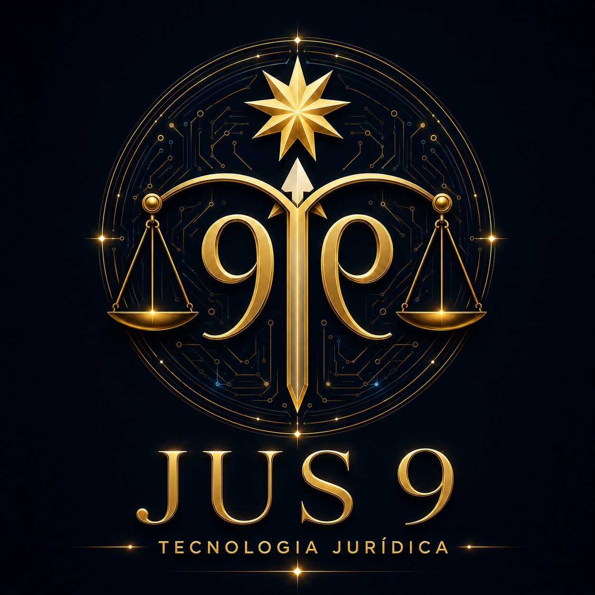

Pitch de investimento — MVP Advogados
Fundador: Clovis Mariano da Costa · Data: 30/07/2026

Gestão jurídica para advogados autônomos e pequenos escritórios, com processos, prazos, clientes e documentos.
Sigilo granular por caso, IA profissional supervisionada e trilha de auditoria como desenho de produto.
Um ecossistema jurídico-tecnológico modular, condicionado ao sucesso do produto inicial e à governança verificável.
Estado atual: MVP demonstrativo e documentação técnica; ainda faltam pilotos externos, clientes pagantes, métricas de retenção e auditoria independente.
Planilhas, mensagens, calendários, arquivos e ferramentas isoladas aumentam retrabalho e perda de contexto.
Prazos, tarefas, documentos e comunicação disputam o tempo que deveria ir ao trabalho jurídico de maior valor.
Casos sensíveis exigem acesso mínimo, titularidade, registro de ações e decisão humana — não apenas armazenamento.
Equipe, cliente, caso, tarefas e histórico em contexto comum.
Cadastro, agenda, alertas e acompanhamento governado.
Comunicação e visibilidade adequadas ao perfil e ao caso.
Documentos classificados, permissões nominais e auditoria.
A IA organiza, sugere, resume e prepara rascunhos; efeitos jurídicos, publicação, envio, exclusão e decisões sensíveis permanecem sob autorização humana.
mínimo privilégiorevisão humanafontes rastreáveislogs minimizadosfalha fechadaEsses dados dimensionam uma categoria global; não são TAM comprovado da Jus 9 no Brasil. O mercado endereçável do MVP será medido com pilotos, segmentação, disposição a pagar e custo de aquisição reais.
O pitch evita multiplicar o número de advogados por preço de tabela para fabricar um TAM. A próxima diligência deve produzir TAM/SAM/SOM brasileiro com metodologia documentada.
| Grupo | Exemplos | Força observável | Hipótese de diferenciação Jus 9 |
|---|---|---|---|
| Gestão jurídica | Astrea, Projuris ADV, ADVBOX, Legal One | Produtos estabelecidos, rotinas e bases ativas | Sigilo por caso + IA supervisionada + auditoria integrada |
| Suite de ferramentas | Jusfy | Amplitude funcional e entrada de baixo custo | Fluxo operacional governado, não apenas ferramentas avulsas |
| Solução pontual | Legalcloud | Especialização e preço acessível | Integração de prazos, clientes, documentos e IA |
Disciplina: diferenciação é hipótese até que usuários a escolham, paguem por ela e permaneçam. Não se afirma exclusividade sem prova comparativa abrangente.
| Hipótese de plano | Referência mensal | Objetivo do teste |
|---|---|---|
| Entrada individual | R$ 0 | Ativação, aprendizagem e limite de uso sustentável |
| Profissional | R$ 99,90 | Disposição a pagar por operação individual ampliada |
| Profissional avançado | R$ 299,90 | Valor percebido em volume, IA e governança |
| Equipe / escritório | R$ 599,99 | Colaboração, permissões, auditoria e suporte |
| Institucional | sob consulta | Integrações e governança após maturidade do produto |
Antes de publicação comercial: validar escopo, impostos, suporte, limites de IA, armazenamento, CAC, margem bruta e política de cancelamento.
Números de usuários, receita, integrações ou clientes só entram em versão futura quando acompanhados de evidência documental apropriada.
Público, interno, sigiloso, jurídico ou efeito oficial.
Fontes, escopo, incerteza e resposta adequada ao papel.
Revisão, autorização, auditoria e possibilidade de recusa.
Minimização, separação de dados e acesso pelo menor privilégio.
Versão, fonte, ação, responsável e motivo registráveis.
Sem credencial, fonte ou autorização, o sistema não simula sucesso.
MVP ponta a ponta, arquitetura fechada, demonstração reproduzível e plano de pilotos.
3–5 pilotos formalizados, backend seguro, permissões e métricas de uso.
Primeiros clientes pagantes, segurança/LGPD testadas e aprendizado de retenção.
Datas são janelas de planejamento. A liberação depende do aceite das evidências definidas no instrumento de investimento.
Validar produto, pilotos, segurança e primeiros clientes.
Referência operacional histórica; só se torna orçamento após revisão, financiamento e capacidade de execução.
Corredor cumulativo de capital para ampliar produto e ecossistema — não é rodada atual, receita, valuation nem meta automática.
Mensagem central: o horizonte de R$ 7–8 milhões só existe como caminho condicionado a marcos sucessivos e nova diligência em cada etapa.
Percentuais são proposta inicial; valores finais dependem de orçamento, instrumento jurídico, tributos e cronograma aprovado.
MVP Advogados: processos, prazos, clientes, documentos e IA supervisionada.
rodada atualEducação, biblioteca, dados e ferramentas conectadas ao uso comprovado.
condicionada a PMFIntegrações, parceiros, jornadas e serviços institucionais com governança madura.
condicionada a escalaO ecossistema é uma opção estratégica. Não aumenta o valor da rodada atual por si só; torna-se ativo à medida que módulos compartilham identidade, dados governados, distribuição e confiança.
| Risco | Estado honesto | Prova exigida |
|---|---|---|
| Receita | Sem MRR comprovada | clientes pagantes, coortes e retenção |
| Produto | Demos não equivalem a operação em escala | pilotos acompanhados e métricas de uso |
| Segurança | Governança documentada não substitui penteste | auditoria independente e correções |
| Equipe | Dependência elevada do fundador | liderança técnica e comercial contratada |
| Regulação e integrações | CNJ/PDPJ e terceiros exigem autorização própria | termos, credenciais e homologação formal |
| Escopo | Visão de ecossistema pode dispersar | gates que preservem foco no MVP Advogados |
Fundador · estratégia jurídica e de produto
Conduz visão, arquitetura conceitual, documentação, parcerias e governança humana.
Cargos, vínculos, dedicação, remuneração e participação societária só devem ser apresentados após formalização documental.
Buscamos investidores e parceiros estratégicos para validar o MVP Advogados com marcos claros, governança verificável e expansão responsável.
clovis@jus9tecnologia.com.br
jus9tecnologia.com.br
investimentos.jus9tecnologia.com.br
produtopilotossegurançaprimeira receita